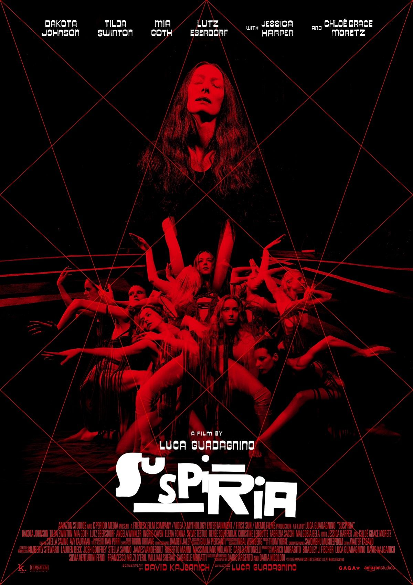
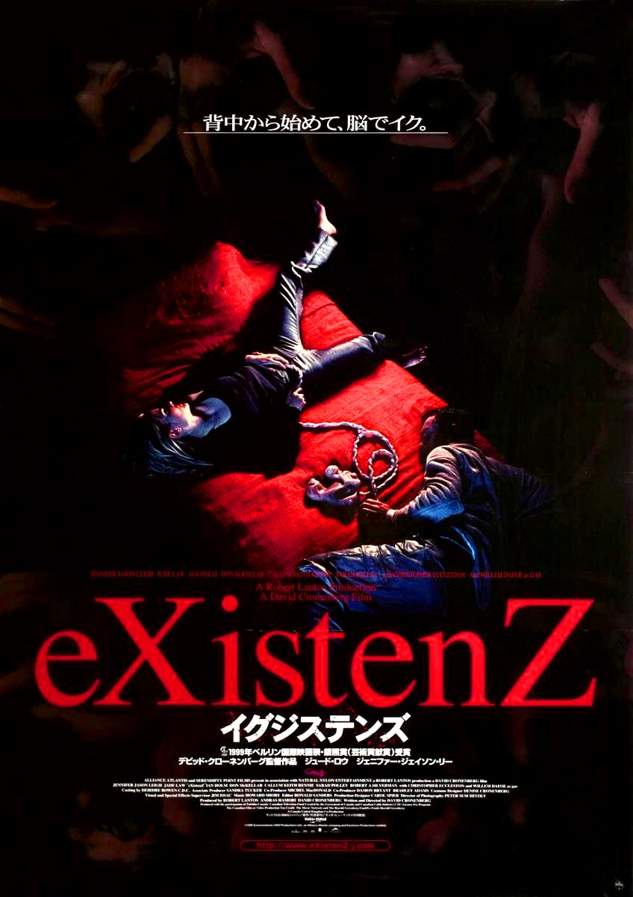
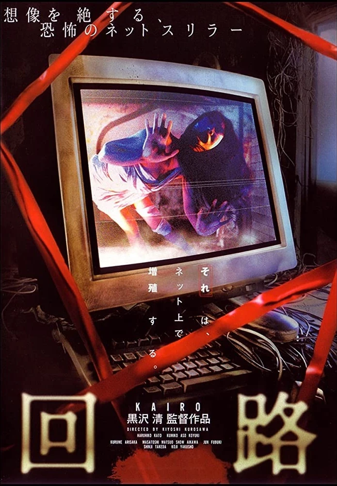
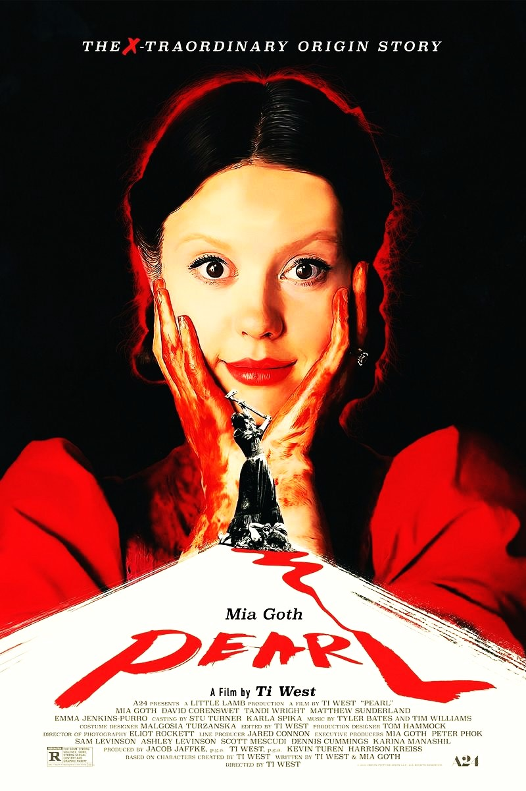
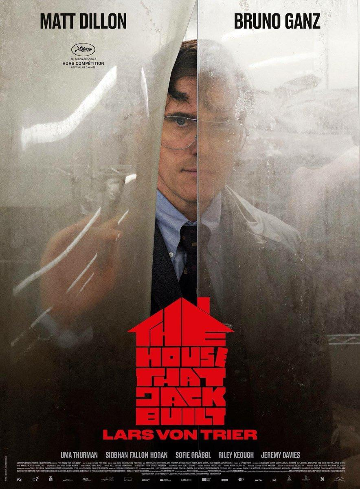
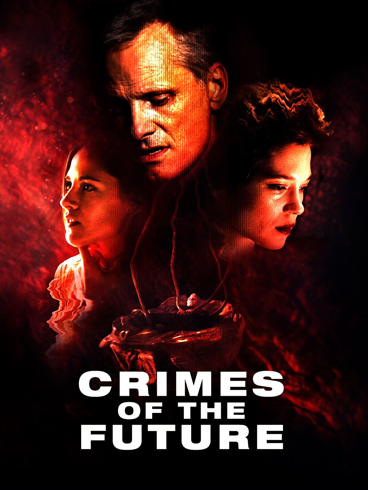

Las más terroríficas

Suspiria
2018, Luca Guadagnino
Una joven estadounidense viaja a Berlín para formar parte de una compañía de danza de renombre mundial, pero la academia esconde una historia oscura y horripilante.

eXistenZ
1999, David Cronenberg
Allegra Geller es una diseñadora de videojuegos que se ve atacada por unos asesinos mientras jugaba un videojuego de su propia creación.

Pulse
2001, Kiyoshi Kurosawa
Una misteriosa web promete el contacto con los muertos. La página se vuelve viral y, pronto, las personas empiezan a morir misteriosamente.
Recomendado


